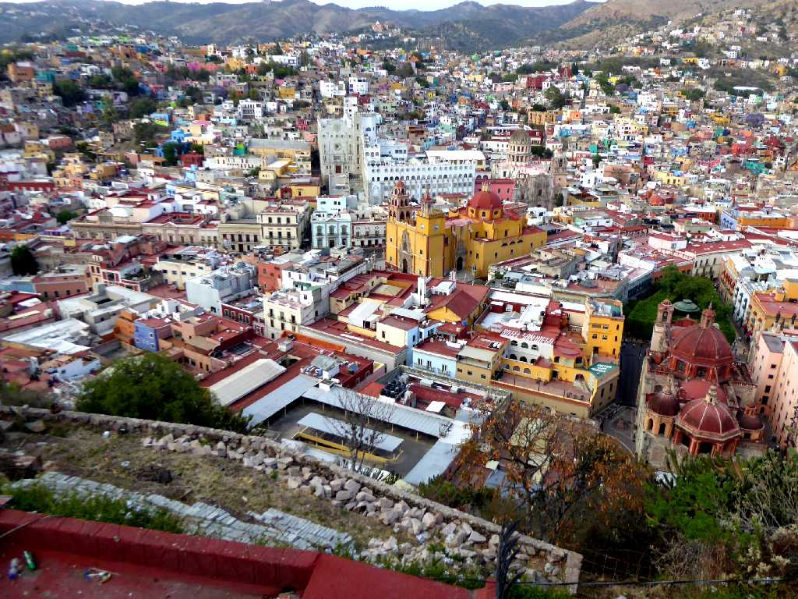
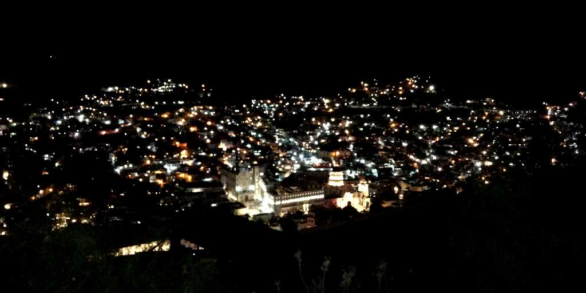
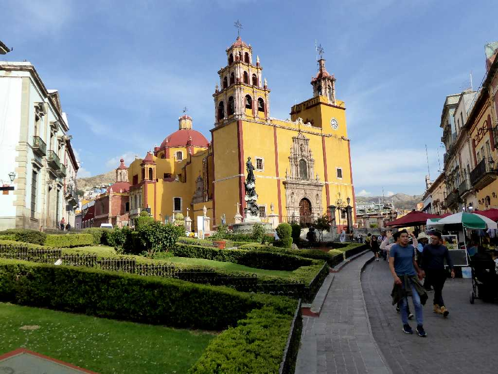
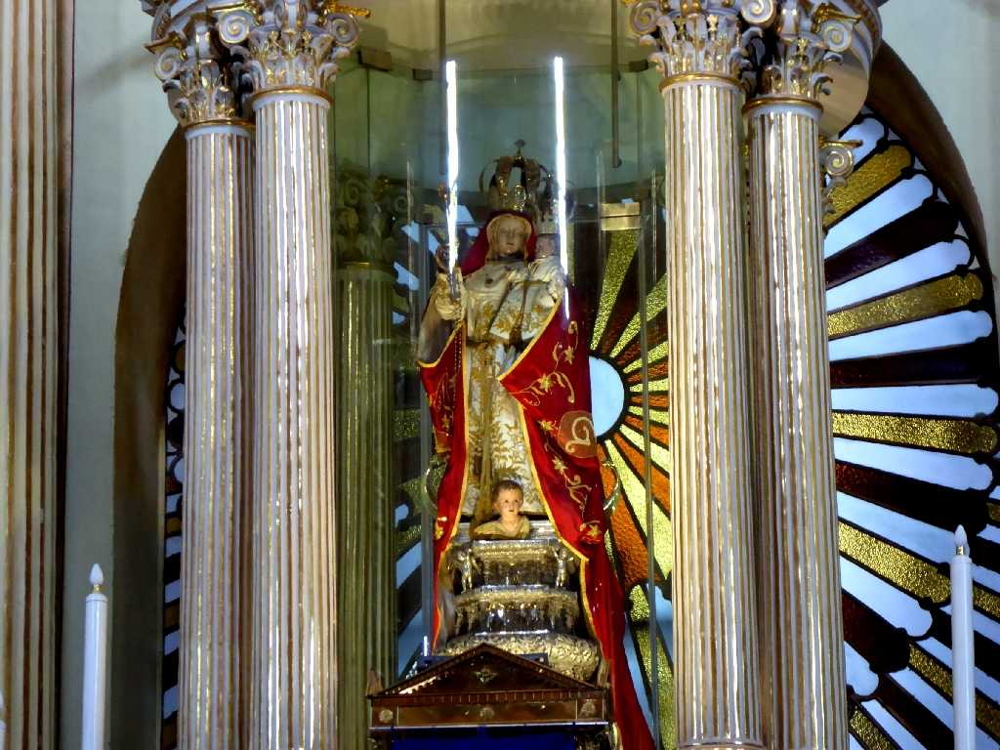
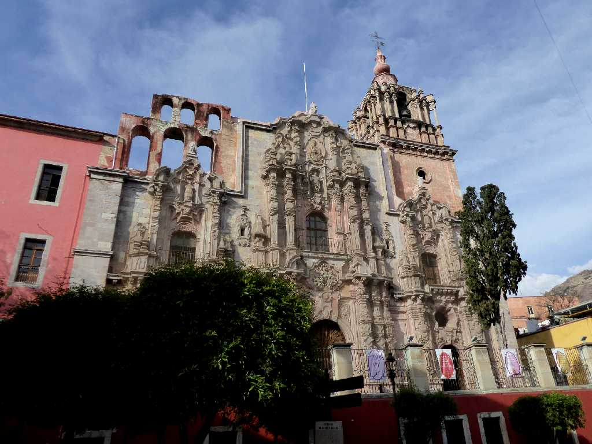
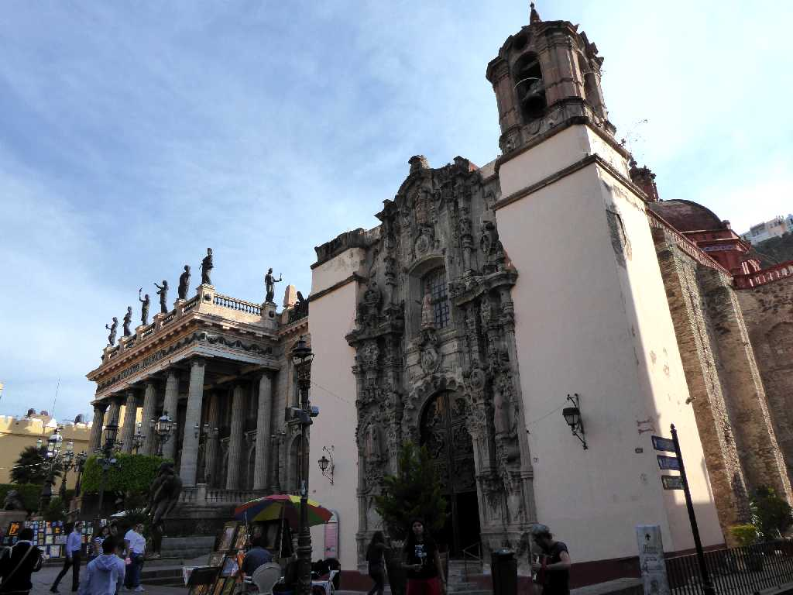
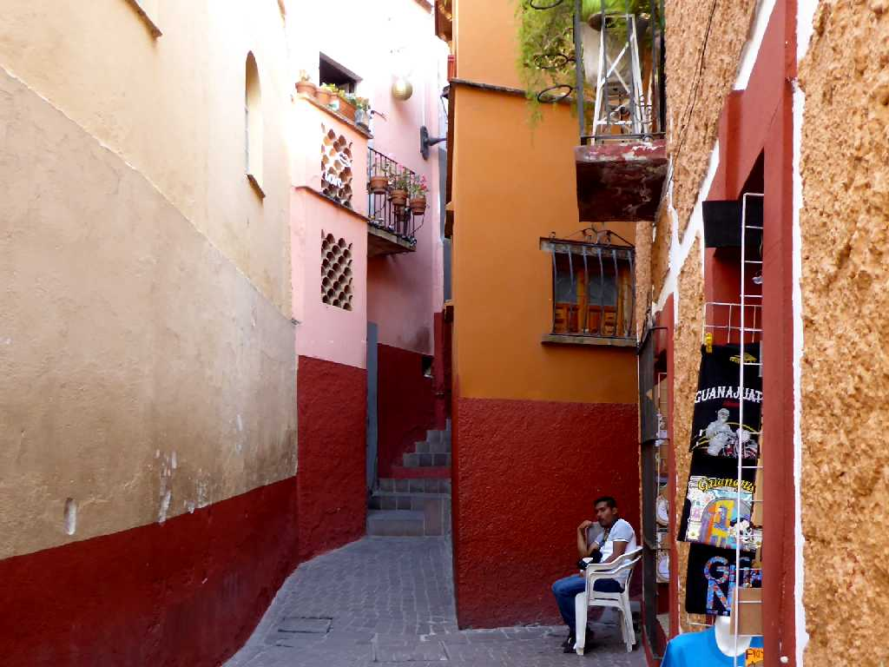
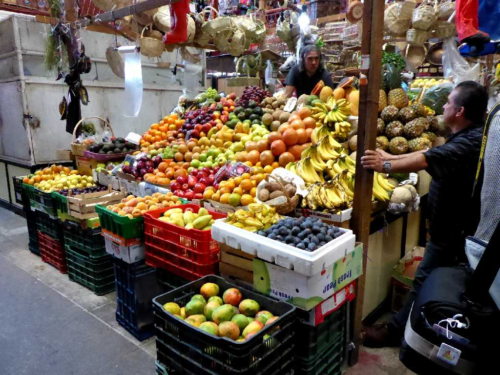
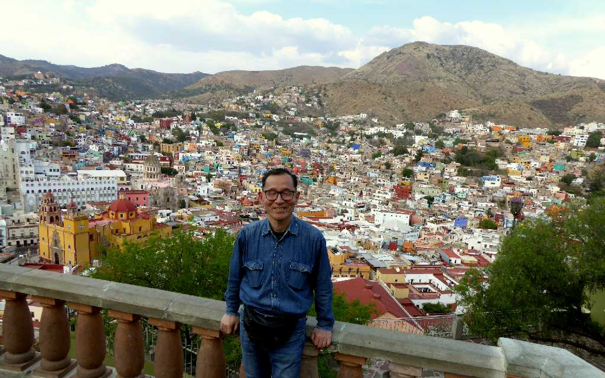

El Pípila Guanajuato
ピピラの丘からグアナファト中心街を望む

Night View Guanajuato

Parroquia de Basílica Colegiata de Nuestra Señora de Guanajuato
１６９６年に創られたバロック様式と新古典主義様式のグアナファト聖母大聖堂

Virgen Maria Altar Parroquia de Basílica Colegiata de Nuestra Señora de Guanajuato
グアナファトの聖母は８世紀に創られスペインの洞窟に８００年間隠されていた木造の宝石が散りばめられたメキシコで最古の聖母像

Templo de la Compañía de Jesús Oratorio de San Felipe Neri Guanajuato
１７６５年に創られたイエズス会のラコンパニーア聖堂

Teatro Juárez Guanajuato Iglesia de San Diego

Callejón del Beso Guanajuato
グアナファト市街地には狭い小道が多く２人がやっと通れる口づけの小道

Mercado Hidalgo Guanajuato
鉄道駅を改修して創られたイダルゴ市場

March 9 2020 Guanajuato